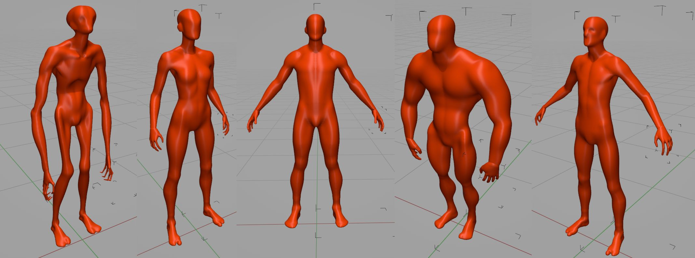
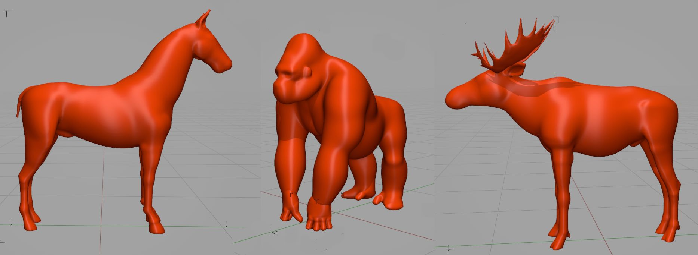
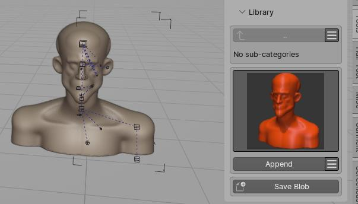
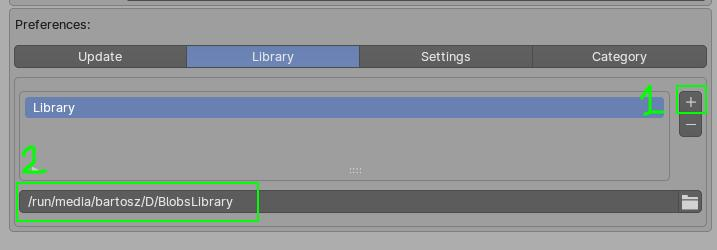

Blobs Library¶
 Some of the humanoid presets from Blobs library
 Some of the animal presets from Blobs library
Blobs library contains more than 20 blobs presets.
You can also store your own presets with option to group them into categories (folders).
Note: Sample library file - BlobsLibrary.zip - can be downloaded from Gumroad. Use the download link, that you got from Gumroad after you purchase, to get the library zip file, then unzip the BlobsLibrary.zip somewhere on your Hard Drive. Finally go to addon preferences and setup library path by entering extracted folder location.

License¶
License - CAL-NA-NRB. Basically you can do everything with the assets:
- commercial use of base asset and modifications,
- no requirement to credit the author,
- reselling of modifications,
- modifications are allowed, and can be shared
The only thing you can't do is to resell the assets as they are. Reselling base items is not allowed
Library location¶
User Preferences > Add-ons > Blob Fusion > Library tab.
Select target folder where library is located:

[☰] Categories menu¶
- Add, Delete, Rename category (folder)
Note - Renaming and Deleting categories requires selecting target folder with '+' button next to the category name.
[☰] Presets menu¶
- Add, Delete, Rename, Open active preset (the one that is currently displayed with thumbnail).
Appending Preset¶
Click Append button to import selected preset to your scene.
Storing Presets¶
- select objects you want to be saved in your preset (you can select multiple objects, of any type - mesh, blob, curve etc.)
- click 'Store Blob' button.
- Enter preset name in popup window (there will be warning if you try to override existing preset)
- outline the capture region in the 3D view, which will be used for thumbnail generation. To do this, click and drag to create a rectangular shape in the 3D Viewport. You can adjust the corners of the captured area if you want. Finally, press Enter to store the preset.